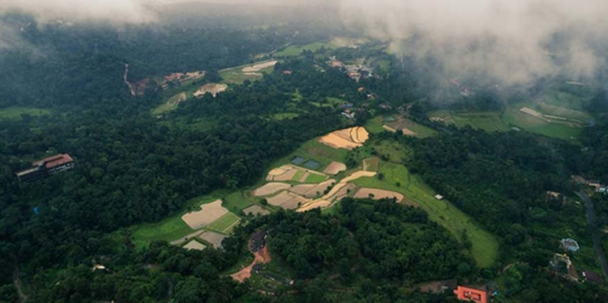

Munnar’s tea gardens and rolling hills look even more enchanting in the rainy season. The mist-covered mountains and lush greenery make it a perfect monsoon destination. If you are in Munnar, you can also visit Eravikulam National Park. You may further explore Mattupetty Dam and Anamudi Peak. Anamudi is the highest peak in South India.

2.Coorg, Karnataka
Did you know Coorg is also known as Scotland of India? It is a paradise during the monsoon. The place is mainly famous for its coffee plantations and mesmerising waterfalls. Its trekking trails make it an ideal destination for nature lovers. Don’t miss Abbey Falls, Raja’s Seat, and Nagarhole National Park.
3. Mahabaleshwar, Maharashtra
If you want to visit a serene hill station, Mahabaleshwar is a good option. It is known for its pleasant weather and stunning landscapes. The waterfalls in Mahabaleshwar make it a perfect monsoon getaway. You may also visit Pratapgad Fort at this destination. Venna Lake and Lingmala Waterfall are other options.
4. Darjeeling, West Bengal
Do you want to get close to the Himalayas during your trip? If yes, then Darjeeling is one of the best places to visit in monsoon. Its tea gardens and panoramic views of the Himalayas make it a must-visit destination. The cool weather and mist-covered mountains add to the charm. Stay assured; your family will love it, especially kids. Don’t miss the Darjeeling Himalayan Railway, Tiger Hill, and Batasia Loop.
5. Alleppey, Kerala
You must have seen Allepey’s charming beauty before in movies. But you can experience its breathtaking view directly during this monsoon season. Just plan a trip to the place. Alleppey’s backwaters come alive during the monsoon. To spend your days, you may stay in a traditional houseboat. You might also cruise along the tranquil backwaters amidst the rain. Also, find time to explore Alappuzha Beach, Krishnapuram Palace, and Marari Beach.